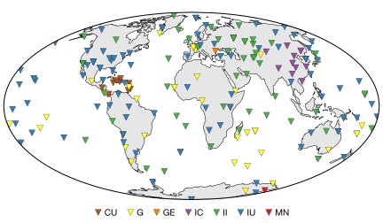

Seismology¶
Just a set of function and scripts, I have created for figures that I like, as well as other notes I deem important in terms of coding in seismology.
Plotting a good looking station map¶
I have created a script that is working well for up to 10 networks with the
default settings, which use matplotlib’s tab10 qualatative colormap.
For more networks, the lwsspy.plot_inventory() function takes in
a colormap option which takes x colors for x networks sequentially from
a matplotlib colormap. A full script for writing the figure is shown below.
"""
This script generates a figure with a station map using functions
from lwsspy. Internet required as the station map is downloaded.
Map created for GCMT3D paper.
:Author:
Lucas Sawade (lsawade@princeton.edu)
:Last modifided:
Lucas Sawade 2021.01.14 13.00
"""
import os
from obspy import UTCDateTime
import matplotlib.pyplot as plt
import lwsspy.plot as lplt
import lwsspy.maps as lmaps
import lwsspy.seismo as lseis
lplt.updaterc()
DOCFIGURES = os.path.dirname(os.path.dirname(__file__))
# Get the GCMT3D data directory
datadir = os.path.join(os.path.dirname(os.path.abspath(__file__)), "data")
# Networks used in the Global CMT Project
networks = ["II", "IU", "IC", "G", "MN", "GE", "CU"]
networksstring = ",".join(networks)
# number of legend columns
ncol = len(networks)
# Define file
xml_name = "gcmt3d_station.xml"
invfile = os.path.join(datadir, xml_name)
# Write inventory after downloading
if os.path.exists(invfile):
inv = lpy.seismo.read_inventory(invfile)
else:
# Download metadata
start = UTCDateTime(1976, 1, 1)
end = UTCDateTime.now()
duration = end - start
# Download the data
inv = lseis.download_data(
start, duration=duration, network=networksstring,
station=None, dtype='stations')
# Write it to the script data directory
inv.write(invfile, "STATIONXML")
# Create Figure
plt.figure(figsize=(6, 3.5))
plt.subplots_adjust(bottom=0.05, top=1.0, left=0.01, right=0.99,
wspace=0.0)
# Create map axes
ax = lmaps.map_axes(proj='moll')
# Plot continents
lmaps.plot_map()
# Plot inventory
lplt.plot_inventory(inv, markersize=7, cmap='Set1')
# Create Legend
plt.legend(loc='lower center', frameon=False, fancybox=False,
numpoints=1, scatterpoints=1, fontsize='small',
borderaxespad=-2.5, borderpad=0.5, handletextpad=0.2,
labelspacing=0.2, handlelength=1.0, ncol=ncol,
columnspacing=1.0)
plt.savefig(os.path.join(DOCFIGURES, "station_map.svg"), dpi=300,
transparent=True)
plt.savefig(os.path.join(DOCFIGURES,
"station_map.pdf"), transparent=True)
With the output:
Ideal Source Time Functions¶
Just to be on the safe side and to not have to redo it all the time, I created some functions that compute sourcetime functions with certain dominant frequencies.
A Gaussian pulse:
and its derivative:
A script to plot the functions and their spectra below:
import os
import matplotlib.pyplot as plt
import numpy as np
from scipy.fft import fft, ifft, fftfreq
# Internal
import lwsspy.base as lbase
import lwsspy.plot as lplt
import lwsspy.seismo as lseis
lplt.updaterc()
# Setup time vector
t = np.arange(0, 1.0, 0.00001) # Longer than plot for resolution in F domain!
Nt = len(t)
maxnt = Nt//2
dt = np.diff(t)[0]
t0 = 0.05 # Time shift
f0 = 20.0 # Dominant frequency
# Setup Frequency Vector
freq = fftfreq(Nt, dt)[:maxnt]
# Compute Gaussians
g = lseis.gaussiant(t, t0=t0, f0=f0)
dg = lseis.dgaussiant(t, t0=t0, f0=f0)
# Compute Spectrums
fg = np.abs(fft(g))[:maxnt]
fdg = np.abs(fft(dg))[:maxnt]
# Create figure
plt.figure()
plt.subplots_adjust(hspace=0.35)
plt.subplot(211)
plt.plot(t, g, label='Gaussian')
plt.plot(t, dg, label='d/dt(Gaussian)')
plt.xlabel("Time [s]")
plt.ylabel("Amplitude")
plt.xlim(0.0, 0.2)
plt.legend(ncol=2, frameon=False)
plt.subplot(212)
plt.plot(freq, fg/np.max(fg), label='Gaussian')
plt.plot(freq, fdg/np.max(fdg), label='d/dt(Gaussian)')
plt.legend(ncol=2, frameon=False)
plt.xlabel("Frequency [Hz]")
plt.ylabel("Norm. Amplitude")
plt.xlim(0.0, 100.0)
outnamesvg = os.path.join(lbase.DOCFIGURES, "gaussians.svg")
outnamepdf = os.path.join(lbase.DOCFIGURES, "gaussians.pdf")
plt.savefig(outnamesvg)
plt.savefig(outnamepdf)
With the output:

The functions are documented here lwsspy.seismo.gaussiant.gaussiant()
and lwsspy.seismo.gaussiant.dgaussiant()
Simple station-wise MPI processing using mpi4py¶
I thought it was ridiculous how there is not a single simple example doing this.
from mpi4py import MPI
import numpy as np
from subprocess import Popen, PIPE, STDOUT
from obspy import read, read_inventory, Stream, Inventory
from obspy.geodetics.base import gps2dist_azimuth
from lwsspy import Timer, CMTSource
comm = MPI.COMM_WORLD
rank = comm.Get_rank()
nprocs = comm.Get_size()
def process_stream(st: Stream, inv: Inventory, event_latitude, event_longitude):
st.detrend('demean')
st.detrend('linear')
st.attach_response(inv)
st.filter('bandpass', freqmin=0.001, freqmax=1.0, zerophase=True)
st.remove_response(output="DISP", zero_mean=False, taper=False,
water_level=100)
st.filter('bandpass', freqmin=0.001, freqmax=1.0)
st.resample(10.0)
for tr in st:
# Get station coordinates
coord_dict = inv.get_coordinates(tr.get_id())
lat = coord_dict["latitude"]
lon = coord_dict["longitude"]
# Get distance to earthquake
m2deg = 2*np.pi*6371000.0/360
tr.stats.distance = gps2dist_azimuth(
event_latitude, event_longitude, lat, lon)[0]/m2deg
tr.stats.back_azimuth = gps2dist_azimuth(
event_latitude, event_longitude, lat, lon)[1]
st.rotate('->ZNE', inventory=inv)
st.rotate('NE->RT')
return st
def split(container, count):
"""
Simple function splitting a container into equal length chunks.
Order is not preserved but this is potentially an advantage depending on
the use case.
"""
return [container[_i::count] for _i in range(count)]
statglob = 'your xmls'
waveglob = 'you miniseeds'
# coul use an obspy event here, but it's so difficult to handle...
event = CMTSource.from_CMTSOLUTION_file("your cmt solution")
# Important for specfem simulations
p = Popen(["/bin/echo", "Hello", "from", "rank", f"{rank}/{nprocs}"],
stdout=PIPE, stderr=PIPE, text=True)
p.wait()
out, err = p.communicate()
print(out, err)
if rank == 0:
# Read data
with Timer():
inv = read_inventory(statglob)
st = read(waveglob)
print(f"# Traces: {len(st)}")
print(f"# Channels: {len(inv.get_contents()['channels'])}")
print('Reading done.')
# Split up stations into station chunks
stations = [x.split()[0] for x in inv.get_contents()['stations']]
sstations = split(stations, nprocs)
# Split up traces in to station chunks
with Timer():
stinvlist = []
for _stalist in sstations:
subinv = Inventory()
substream = Stream()
for _sta in _stalist:
network, station = _sta.split(".")
substream += st.select(network=network, station=station)
subinv += inv.select(network=network, station=station)
stinvlist.append([substream, subinv])
print("Splitting done.")
else:
stinvlist = None
# Scatter stream chunks
stinvlist = comm.scatter(stinvlist, root=0)
# Get stream and inventory chunks
substream, subinv = stinvlist
print(
f"Stream {len(substream)} -- "
f"Inv: {len(subinv.get_contents()['channels'])} -- "
f"Rank: {rank}/{nprocs}")
# Process
results = []
with Timer():
results.append(process_stream(substream, subinv,
event.latitude, event.longitude))
print(f"Rank: {rank}/{nprocs} -- Done.")
# Gather
results = comm.gather(results, root=0)
# Sort
if comm.rank == 0:
# Flatten list of lists.
resultst = Stream()
for _result in results:
resultst += _result[0]
print(resultst)